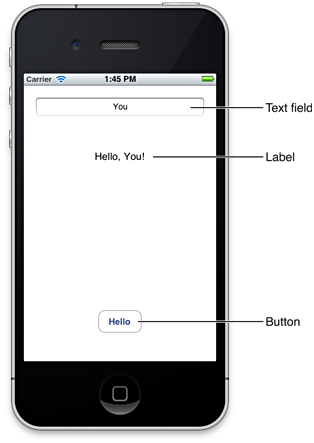
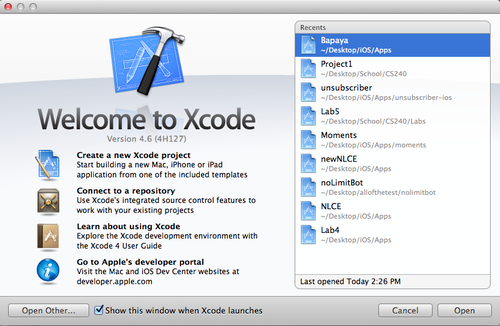
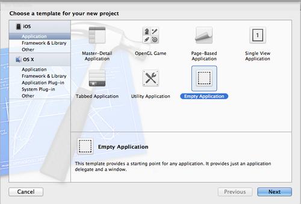
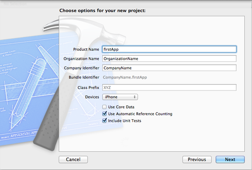
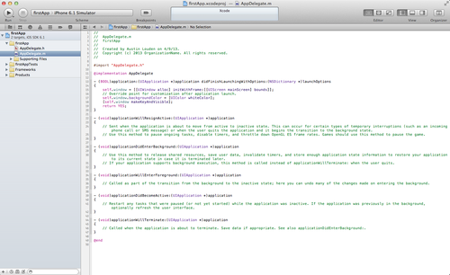
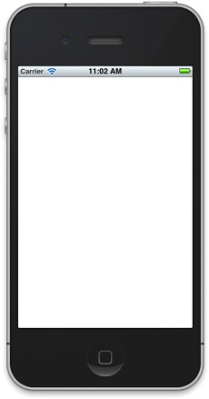
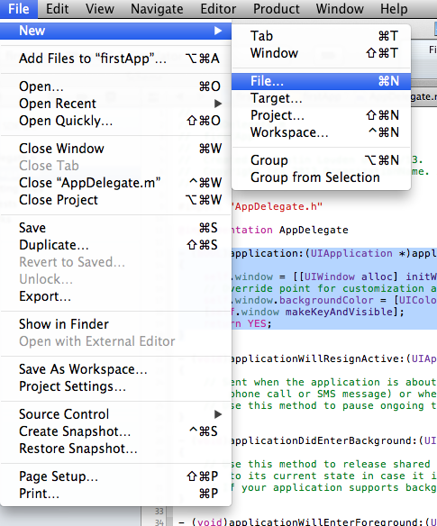
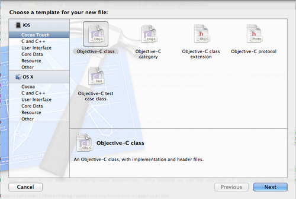
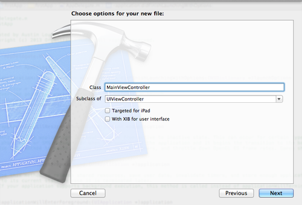
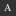

Your First iOS App: 100% Programmatically
This is Part 1 of a tutorial that follows Apple’s “Your First iOS App”, but implements all of the user interface elements programmatically. View Part 2 here or view the complete code on Github. Discussion on Hacker News.
I created this tutorial for developers transitioning to iOS that don’t want to deal with Storyboarding or Interface Builder. It implements the “Hello World” app from Apple’s documentation entirely in code.

From Apple’s documentation:
When you run the finished app, you click inside the text field to reveal the system-provided keyboard. After you use the keyboard to type your name, you dismiss it (by clicking its Done key) and then you click the Hello button to see the string “Hello, Your Name!“ in the label between the text field and the button.
First, open Xcode and click on “Create a new Xcode project” I’m using version 4.6.

Use an empty application.

Fill out the remaining fields. Make sure “Use Automatic Reference Counting” and “Include Unit Tests” are checked. Core Data isn’t necessary for this tutorial.

Even though we chose to create an “Empty Application”, Xcode still created some default files. Navigate to the AppDelegate.m file by clicking the file browser on the left side of the screen.
The App Delegate file is your application’s way of communicating with the operating system, and includes several useful methods.
We’ll mostly be dealing with “application didFinishLaunchingWithOptions”, which is called immediately after the application launches.
If you click on the Run button in the top left, your application should build with a blank white screen.

You might have noticed a warning:
"Application windows are expected to have a root view controller at the end of application launch".
Don’t worry, we’ll set this next, but first we have to create a ViewController class. Click on File, New, File…

In the Cocoa Touch section, select Objective-C class and click Next.

You can choose the name of your class, but make sure to set it as a subclass of UIViewController below. I named mine “MainViewController”. The UIViewController is a fundamental class of iOS development, and is used to make and handle interaction with elements in the user interface. Click Next, and then Create.

You should now have MainViewController.m and MainViewController.h files with some boilerplate code inside. We’ll come back to those in a bit - for now, go back to your AppDelegate.m file.
First, make sure to import your MainViewController class at the top of the file:
#import "AppDelegate.h"
#import "MainViewController.h"Next, take a look at the “application didFinishLaunching” method - it should contain some default code matching the one below:
- (BOOL)application:(UIApplication *)application didFinishLaunchingWithOptions:(NSDictionary *)launchOptions
{
self.window = [[UIWindow alloc]
initWithFrame:[[UIScreen mainScreen] bounds]];
// Override point for customization after application launch.
self.window.backgroundColor = [UIColor whiteColor];
[self.window makeKeyAndVisible];
return YES;
}It’s here that we set the “root view controller” property - or the view that is displayed when the application launches.
- (BOOL)application:(UIApplication *)application didFinishLaunchingWithOptions:(NSDictionary *)launchOptions
{
self.window = [[UIWindow alloc]
initWithFrame:[[UIScreen mainScreen] bounds]];
// Override point for customization after application launch.
self.window.backgroundColor = [UIColor whiteColor];
/* create an instance of our view controller
then set it as the window's root view controller
*/
MainViewController *viewController =
[[MainViewController alloc] init];
self.window.rootViewController = viewController;
[self.window makeKeyAndVisible];
return YES;
}Running the app again should still give you a white screen, but this time the warning will disappear. In the next part of this tutorial, we’ll handle all of the on-screen elements.
Notes
-
napolux reblogged this from austinlouden and added:
Da leggere
- ever-last-forever likes this
-  austinlouden posted this